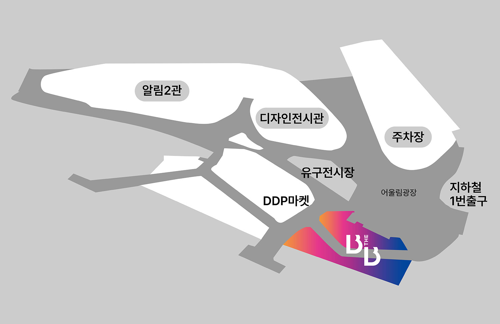

지하철 이용 안내 SubWay
동대문역사문화공원역 1번 출구 (2, 4, 5호선)
Dongdaemun History and
Culture Park Station Exit 1 (2, 4, 5 line)
어울림광장, DDP마켓, 디자인랩 지하2층 출입구, 뮤지엄 지하2층 출입구에서
가까움
Close to Oullim Square, DDP Market, B2-Entrance of Design
Lab and B2-Entrance of Museum
버스 이용 안내 Bus
동대문역사문화공원 (02-174)
Dongdaemun History and Culture Park
(02-174)
간선버스 (파랑) Bus (Blue)
105, 144, 152, 261, 301, 420, N13, N16, N30, N62
지선버스 (초록) Bus (Green)
2012, 2015, 2233, 7212
순환버스 (노랑) Bus (Yellow)
01B
광역버스 (빨강) Bus (Red)
9403
동대문역사문화공원 (02-173)
Dongdaemun History and Culture Park
(02-173)
간선버스 (파랑) Bus (Blue)
N13, N16, N30, N62, 105, 144, 261, 301, 420
지선버스 (초록) Bus (Green)
2014, 2233, 7212
순환버스 (노랑) Bus (Yellow)
01A, 04
동대문디자인플라자.동대문시장 (02-908)
Dongdaemun Design
Plaza.Dongdaemun Market (02-908)
TOUR버스 TOUR Bus
TOUR01
동대문디자인플라자 (02-920)
Dongdaemun Design Plaza (02-920)
TOUR버스 TOUR Bus
TOUR04
동대문디자인플라자 (02-280)
Dongdaemun Design Plaza (02-280)
지선버스 (초록) Bus (Green)
2012
B the B 찾아오는 길 (DDP 지하 2층)
How to get to the B the B (DDP B2)
